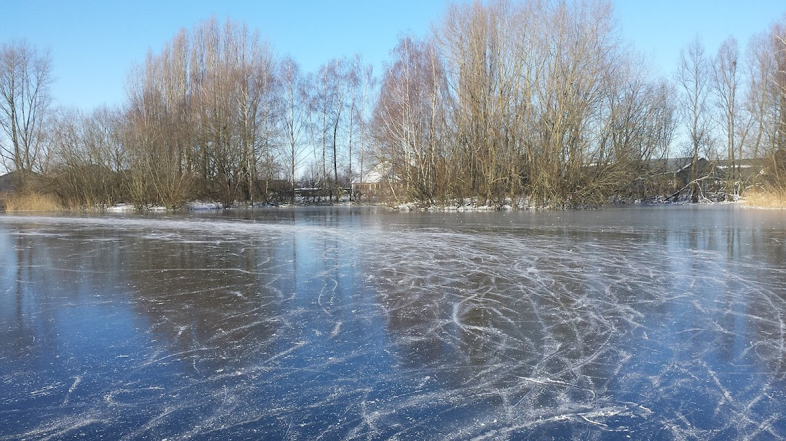
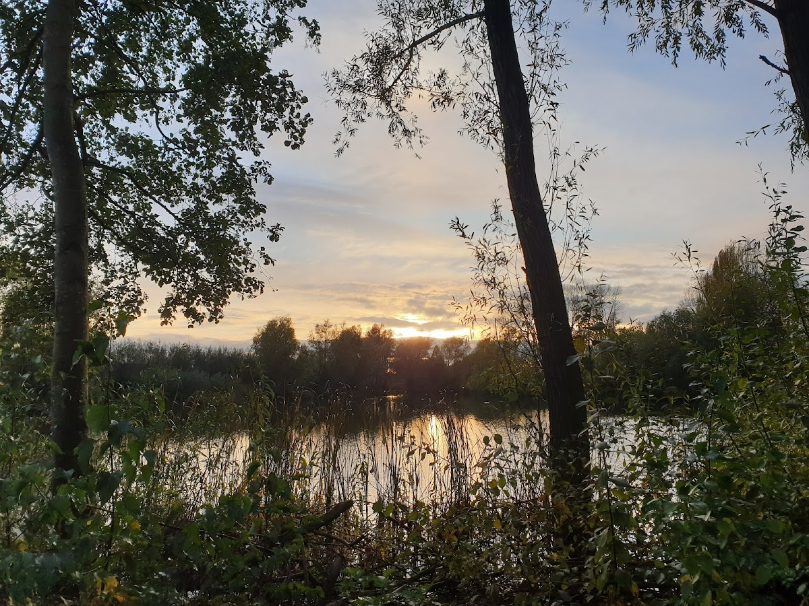
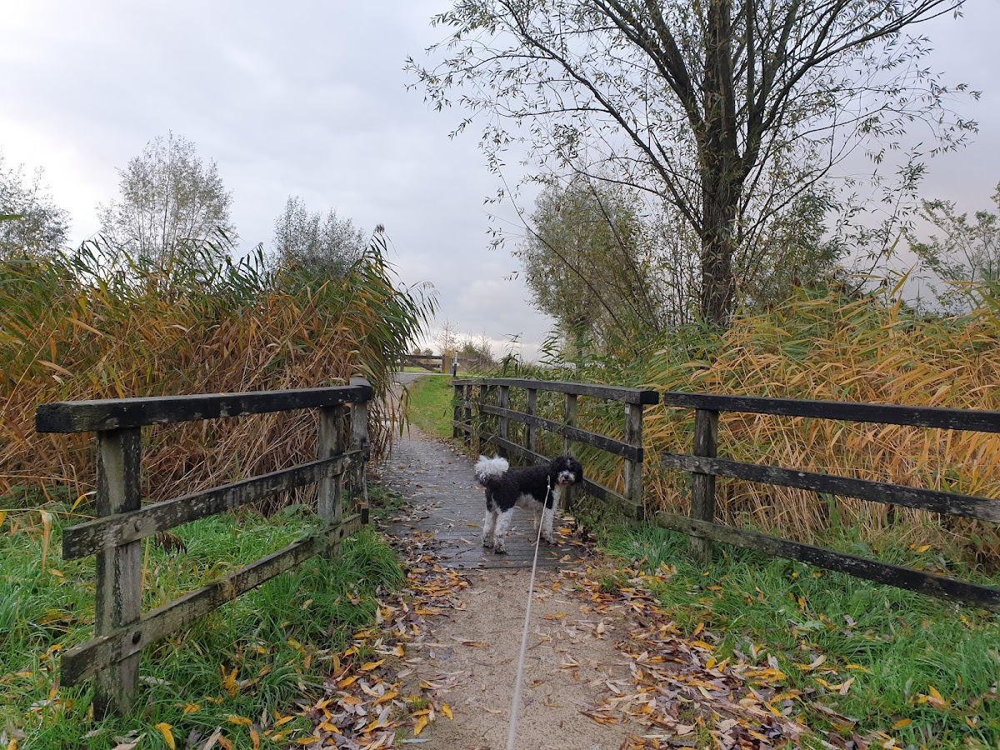

Bij strenge vorst verandert Het Jachtmeer in een prachtige natuurijsbaan.
Als de temperatuur in de winter voldoende daalt en het ijs dik genoeg is, biedt Het Jachtmeer een unieke schaatservaring midden in Oss. De grote waterpartij in de wijk Mettegeupel wordt dan een natuurijsbaan, omgeven door rietvelden en bomen bedekt met rijp.
Schaatsen op natuurijs is een bijzondere winterse belevenis — het geluid van het ijs onder je schaatsen, de koude lucht op je gezicht en het weidse uitzicht over het bevroren meer.

